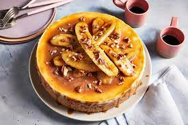

Banana cheesecake

Ingredientes
- 2 platanos
- 4 huevos
- 30ml de zumo de limon
- 350gr de queso crema
- 2 cucharadas de edulcorante liquido
Pasos
- Tritura los platanos, añade los huevos y mezcla todo bien.
- Añadir el zumo de limon y el queso a la mezcla.
- Vertemos en un molde y al horno durante 35/40 minutos.
- Dejar enfriar y sacar del molde.
- Y a disfrutar!